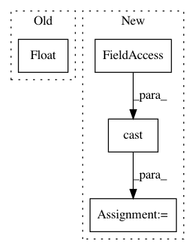

fbf3bafd970d3539ad774bae5f46a4b730901cb5,tensorforce/updater/trpo_updater.py,TRPOUpdater,create_training_operations,#TRPOUpdater#,99
Before Change
mean_kl_divergence = get_kl_divergence_gaussian(self.prev_action_means, self.prev_action_log_stds,
self.action_means, self.action_log_stds) / float(
self.batch_size)
mean_entropy = get_entropy_gaussian(self.action_log_stds) / float(self.batch_size)
self.losses = [surrogate_loss, mean_kl_divergence, mean_entropy]
// Get symbolic gradient expressions
After Change
surrogate_loss = -tf.reduce_mean(prob_ratio * self.advantage)
variables = tf.trainable_variables()
batch_float = tf.cast(self.batch_size, tf.float32)
mean_kl_divergence = get_kl_divergence_gaussian(self.prev_action_means, self.prev_action_log_stds,
self.action_means, self.action_log_stds) / batch_float
mean_entropy = get_entropy_gaussian(self.action_log_stds) / batch_float
In pattern: SUPERPATTERN
Frequency: 3
Non-data size: 4
Instances
Project Name: reinforceio/tensorforce
Commit Name: fbf3bafd970d3539ad774bae5f46a4b730901cb5
Time: 2017-01-15
Author: mi.schaarschmidt@gmail.com
File Name: tensorforce/updater/trpo_updater.py
Class Name: TRPOUpdater
Method Name: create_training_operations
Project Name: tensorflow/tpu
Commit Name: 21cd0774c8c3d41a8464427c81629075c953e7e3
Time: 2018-09-05
Author: xiejw0217@gmail.com
File Name: models/official/retinanet/retinanet_model.py
Class Name:
Method Name: learning_rate_schedule
Project Name: tensorflow/mesh
Commit Name: 5527dea6aa673f05fed6061255340a9e96e3fc90
Time: 2020-02-12
Author: marcvanzee@google.com
File Name: mesh_tensorflow/transformer/learning_rate_schedules.py
Class Name:
Method Name: linear_decay_learning_rate